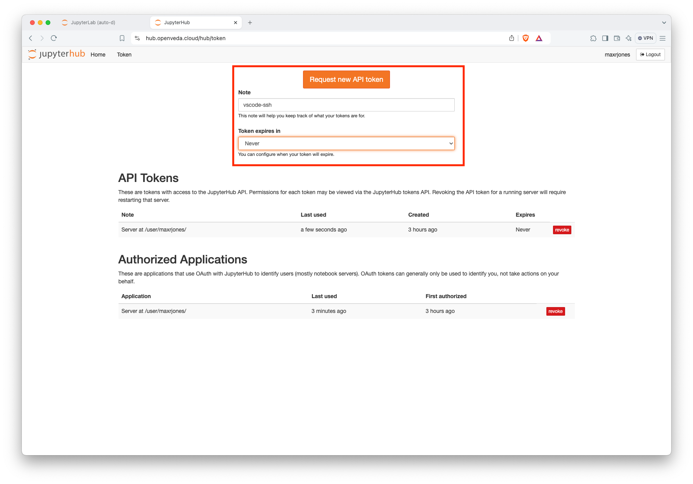
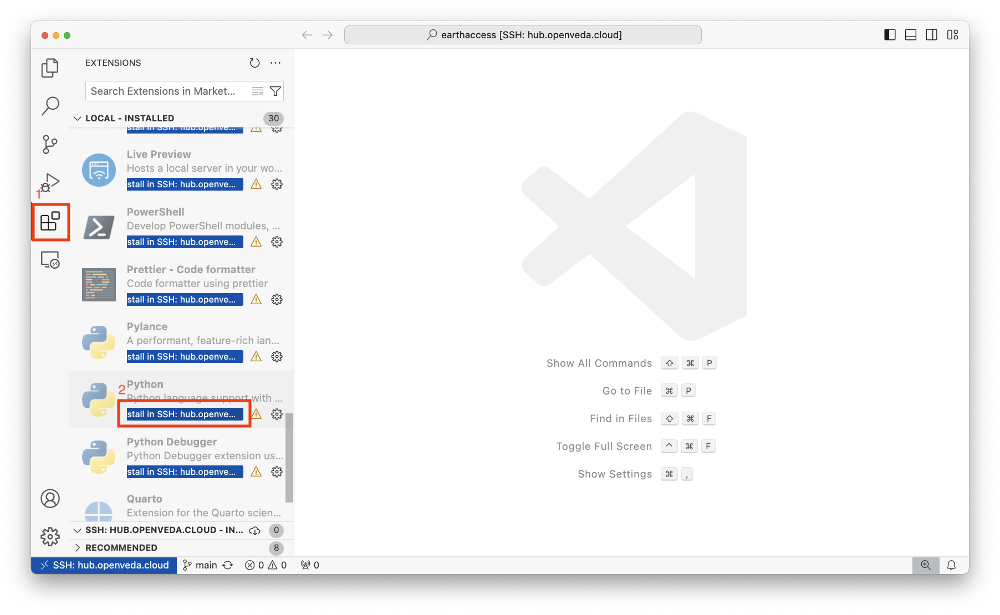
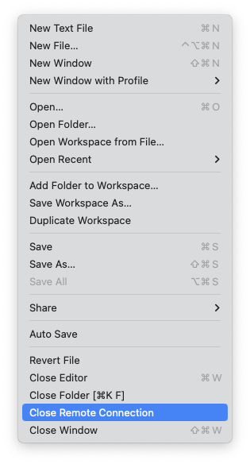

How to ssh into the JupyterHub
This is a how-to guide for connecting to the VEDA JupyterHub from your local environment via ssh. This allows you to use all of ssh’s features (copy, run commands) as well as connecting via VS Code’s proprietary Remote Development functionality.
websocat must be installed on your local machine in order to remotely connect to the VEDA JupyterHub. The full installation instructions are available on websocat’s GitHub README. websocat can be installed on macOS via Homebrew as brew install websocat.
We are exploring two options for using VS Code on the VEDA JupyterHub. These options should be considered experimental and may not be supported long-term.
Setup
Get the token
Launch a server from the VEDA JupyterHub home page. The server must be started in order to connect remotely.
Get a new token from the VEDA JupyterHub token page:
- Enter a descriptive name in the ‘Note’ text window.
- Enter an expiration date.
- Click “request a new API token”

Generate a new token
Treat this token like you would treat a password to your JupyterHub instance!
Setup your local ~/.ssh/config
Before your first time remotely connecting to the VEDA JupyterHub, you need to configure your local ssh.
Add an entry that looks like the following to the end of your ~/.ssh/config. Create it if it does not exist.
Host hub.openveda.cloud User jovyan ProxyCommand websocat --binary -H='Authorization: token <YOUR-JUPYTERHUB-TOKEN>' asyncstdio: wss://%h/user/<YOUR-JUPYTERHUB-USERNAME>/sshd/Replace
<YOUR-JUPYTERHUB-TOKEN>with the token you created earlier.Replace
<YOUR-JUPYTERHUB-USERNAME>with your VEDA JupyterHub username.
Setup ssh keys on your JupyterHub server
You need to put some ssh public keys in ~/.ssh/authorized_keys after you start your JupyterHub server and have completed the setup of your private keys on your local machine.
Launch a server from the VEDA JupyterHub home page if you don’t already have one running.
Open a terminal in JupyterLab
Run the following commands, replacing
with your github username: mkdir -p ~/.ssh wget https://github.com/<YOUR-GITHUB-USERNAME>.keys -O ~/.ssh/authorized_keys chmod 0600 ~/.ssh/authorized_keys
Connect to JupyterHub
There are two ways to connect to JupyterHub: Connect to the JupyterHub using VS Code’s Remote SSH feature and Connect via ssh on the command line.
Connect to the JupyterHub using the VS Code Remote SSH feature
- Launch a server from the VEDA JupyterHub home page if you don’t already have one running.
- Open a new VS Code Window on your local maachine.
- Open the command prompt (command + shift + P on macOS)
- Enter
Remote-SSH: Connect to Host... - Select
hub.openveda.cloud - Select “Open Folder” and select the specific folder that you want to work in.
Now you’re connected and ready to develop using VS Code! You may need to install some extensions in the SSH server to use your regular development workflows.
Most times, you will want to select a folder that is a git repository, perhaps cloned from GitHub, so that your code is version controlled.
If you have not ssh’d into the JupyterHub before, you will receive a notice that “The authenticity of host ‘hub.openveda.cloud’ can’t be established.”. Enter ‘yes’ in response to this prompt. This will add the key to your list of known hosts, so that you will be notified if it changes in the future.
Install extensions
You will need to install the extensions that you want to use in the SSH.
Navigate to the Extensions view by clicking on the icon with four boxes and one slightly offset:

Extensions icon in VS Code The view shows the already installed extensions. Type the name of the extension you’re looking for in the ‘Search Extensions’ text box, or scroll to see your locally installed extensions:

Install VS Code extension Select ‘Install in SSH: hub.openveda.cloud’
Closing the connection
Select File > Close Remote Connection to disconnect from the JupyterHub:

Close remote connection
Exiting VS Code will also close the remote connection.
Connect to the JupyterHub via ssh on the command line
- Launch a server from the VEDA JupyterHub home page if you don’t already have one running.
- Open a new terminal on your local machine.
- Enter
ssh hub.openveda.cloud
You are now ssh’d into the JupyterHub! If you enter a command (e.g., touch am-i-on-the-jupyterhub), it will be run on the remote server.
If you have not ssh’d into the JupyterHub before, you will receive a notice that “The authenticity of host ‘hub.openveda.cloud’ can’t be established.”. Enter ‘yes’ in response to this prompt. This will add the key to your list of known hosts, so that you will be notified if it changes in the future.
Acknowledgments
These instructions are based off the jupyter-sshd-proxy documentation and a screen recording Yuvi Panda shared in the NASA IMPACT slack workspace. Thank you to Yuvi Panda for developing jupyter-sshd-proxy!